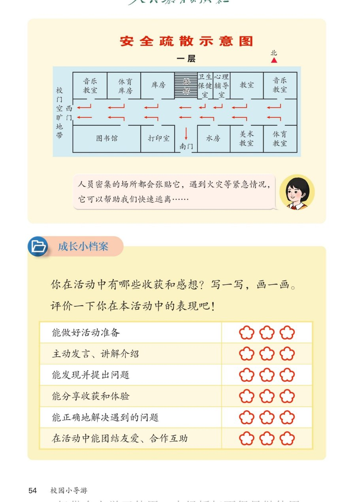

🔊 综合与实践 · 校园小导游 · 课本第 54 页 · 安全疏散示意图与成长小档案
人教版《数学》二年级上册 · 有声图文带读 · 先想后看解析 · 会看疏散图 + 总结活动收获
题数
6
认知
2
强化
3
拓展
1
本页重点
看懂安全疏散示意图 · 单元收获与自我评价
🎧 分两步学：
① 解析教材图片
——纯声音读图，读到哪一块哪一块闪动提示；关键处先倒计时让你思考，再在图片下方给出解析并朗读。
② 分层提问练习
——六道分层题（认知 / 强化 / 拓展），先思考再展开解析、朗读参考答案；这一步不再回到图片。
也可以随时点任意一句话、图上任意一块单独听；点课本文字卡还会展开答案。
教材图片（点块听读，读到哪块哪块闪）

📖 人教版《数学》二年级上册 · 课本第 54 页 · 图片仅供个人学习，版权归人民教育出版社所有
🤔 想一想（点我可跳过）
课本的文字（点句子：听读 + 看答案）
疏散图
疏散示意图上有什么？
看答案 ▾
图上是教学楼
一层
的平面图；
上面一排：
音乐教室、体育库房、库房、楼梯、卫生保健室、心理辅导室、教室
；
下面一排：
图书馆、打印室、水房、美术教室、体育教室
；
出口有：
校门、西门、南门
。
疏散方向
红色箭头指向哪里？
看答案 ▾
右上角方向标：
北
朝上；
红色箭头表示
疏散方向
，都指向出口：
校门、西门、南门
；
遇到紧急情况，跟着箭头走就能快速撤离。
安全知识
疏散示意图有什么用？
看答案 ▾
学校、商场、影院等
人员密集场所
都会张贴疏散示意图；
遇到火灾等紧急情况，看图找
箭头
、找
出口
，快速安全逃离；
平时要先
认一认
自己教室最近的出口。
成长小档案
活动收获与自我评价
看答案 ▾
收获示例：我学会了
辨认东南西北
，会用
方向
介绍校园，还会
设计导游路线
了！
评价六项：能做好活动准备 / 主动发言、讲解介绍 / 能发现并提出问题 / 能分享收获和体验 / 能正确解决遇到的问题 / 团结友爱、合作互助；
每项涂
1～3 朵
花，涂前先想想自己做到了没有。
分层提问练习（先想后看解析）
🧭
认知
疏散示意图上的方向标"北"在什么位置？说明了什么？
看解析
🤔 想一想
解析：
方向标在图的
右上方
，箭头指着上方写"北"；
说明这幅图也是
上北、下南、左西、右东
。
➡️
认知
疏散示意图里的红色箭头指向哪里？
看解析
🤔 想一想
解析：
指向三个出口：
校门、西门、南门
。
跟着箭头走，就能快速撤离到室外安全地带。
🚨
强化
遇到火灾等紧急情况，疏散示意图能帮我们做什么？
看解析
🤔 想一想
解析：
先找
自己所在位置
，再找
最近的路线
；
跟着
箭头
走向出口，快速逃离、不慌张不拥挤。
🗺️
强化
水房在打印室的哪一面？
看解析
🤔 想一想
解析：
水房在打印室的
东面
（右面）；
按
左西右东
，打印室右边的水房就是它的东面。
🎒
强化
"校园小导游"活动结束了，你有哪些收获？
看解析
🤔 想一想
解析：
学会了
辨认东南西北
，会用方向描述位置；
会看
地图
（上北下南左西右东）、会
设计路线
，还知道大自然也能指方向。
🌈
拓展
给自己评价表涂花：哪项涂三朵？哪项还要努力？
看解析
🤔 想一想
解析：
先逐项想一想自己
做到了没有
，再涂 1～3 朵花；
涂得少的项写上
努力小目标
，下次活动争取进步。
🌈 诚实评价 + 小目标，就是成长小档案的意义
① 解析教材图片
② 分层提问练习
⏹ 停止
纯声音 + 高亮跟随 · 想好才出解析
← 返回导航